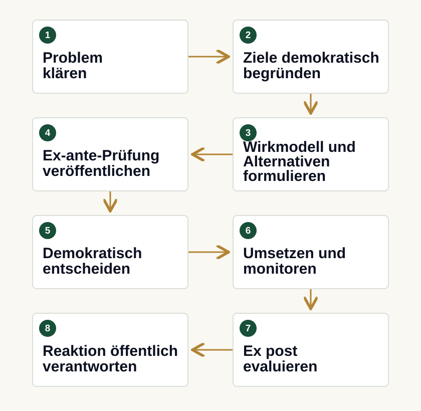

In diesem Dossier
- Zusammenfassung
- 1. Problemstellung: Entscheiden ist noch kein Lernen
- 2. Wissenschaftliche Grundlagen
- 3. Begriff und Maßstab der lernfähigen Demokratie
- 4. Vorschlag für eine institutionelle Lernarchitektur
- 5. Messung, Zurechnung und Unsicherheit
- 6. Demokratische Grenzen und institutioneller Schutz
- 7. Zwei Anwendungsszenarien
- 8. Umsetzung und empirische Prüfung des Vorschlags
- 9. Forschungs- und Erkenntnisgrenzen
- 10. Schlussfolgerung
- Anhang: Einseitiger Prüf- und Lernbogen (Muster)
- Quellen und Literatur
LEITGEDANKE
Nicht der Fehler ist das demokratische Kernproblem. Entscheidend ist, ob Erkenntnisse rechtzeitig, transparent und verantwortlich in verändertes Handeln zurückkehren.
Wissenschaftlich fundierte Konzeptions- und Diskussionsfassung. Kein empirischer Nachweis der Wirksamkeit eines bereits implementierten Gesamtsystems. Ausgangspunkt ist die publizierte Wirkungsökonomie.
Zusammenfassung
Die lernfähige Demokratie bezeichnet ein institutionelles Modell, in dem politische Entscheidungen als überprüfbare Wirkungshypothesen behandelt werden. Ziele werden demokratisch legitimiert, Wirkmechanismen und Alternativen vorab dokumentiert, tatsächliche Zustandsveränderungen nach der Umsetzung untersucht und Ergebnisse in öffentliche, begründungspflichtige Folgeentscheidungen zurückgeführt. Damit ist Lernen mehr als die Veröffentlichung eines Evaluierungsberichts: Es muss die Möglichkeit einer politisch verantworteten Korrektur eröffnen.
Der Vorschlag verbindet etablierte Ansätze aus Pragmatismus, Organisationslernen, Politikevaluation und experimenteller Governance mit der Wirkungsökonomie (WÖk). Deren spezifischer Beitrag besteht in einem verbindenden Wirkungsrahmen für Mensch, Planet und Demokratie, den SDGs und transparent ausgewiesenen SDG+-Dimensionen sowie in der Unterscheidung von Wirkungspotenzial, nachgewiesener Zustandsveränderung, Wirkungen erster bis dritter Ordnung, systemischem Wert, normativer Bewertung und Rückkopplung. [1-3, 5-8, 12-17]
Der deutsche institutionelle Ausgangspunkt ist konkreter, als eine reine SDG-Perspektive vermuten lässt: Die Deutsche Nachhaltigkeitsstrategie (DNS) operationalisiert die Agenda 2030 für Deutschland, die Gemeinsame Geschäftsordnung der Bundesministerien (GGO) sieht die Prüfung von Gesetzesfolgen einschließlich Nachhaltigkeitsfolgen vor, und das Statistische Bundesamt begleitet die nationale Zielerreichung. Die hier vorgeschlagene Neuerung ist nicht die erstmalige Einführung von Wirkungsprüfung, sondern ihre systematische, öffentliche Verknüpfung mit begründungspflichtigen Folgeentscheidungen. [9, 21-26]
ZENTRALE THESE
Eine Demokratie wird nicht schon dadurch lernfähig, dass sie Wirkungen misst. Lernfähig wird sie, wenn belastbare Erkenntnisse rechtzeitig in überprüfbare politische Reaktionen übersetzt werden.
Forschungsfrage und Status
Wie müssen Ziele, Evidenz, demokratische Entscheidung, unabhängige Prüfung und institutionelle Rückkopplung miteinander verbunden sein, damit politische Systeme aus Maßnahmen und Fehlannahmen lernen können, ohne durch Kennzahlensteuerung, Expertenherrschaft oder politische Straflogiken entdemokratisiert zu werden?
Status: Dieses Dossier entwickelt und prüft eine theoretisch begründete Prozessarchitektur. Es ist kein empirisch validiertes Evaluationsinstrument, keine Rechtsnorm und kein Nachweis, dass die vorgeschlagenen Regeln bereits zu besseren Ergebnissen führen. Literaturgestützte Aussagen, bestehende Verfahren, WÖk-Grundlagen und neue Vorschläge werden ausdrücklich getrennt.
Aufbau
- 1. Problemstellung: Warum politisches Lernen institutionell schwierig ist
- 2. Wissenschaftliche Grundlagen und bestehende Verfahren
- 3. Begriff und normative Verankerung in der Wirkungsökonomie
- 4. Institutionelles Prozessmodell und Rückkopplung
- 5. Methodik, Messung und Grenzen der Zurechnung
- 6. Demokratische Legitimation und Missbrauchsschutz
- 7. Fallbeispiel, Pilotierung und Forschungsprogramm
- 8. Schlussfolgerung, Prüfbogen und Literatur
1. Problemstellung: Entscheiden ist noch kein Lernen
Politische Entscheidungen entstehen unter Unsicherheit. Gesellschaftliche Systeme reagieren zeitverzögert, nichtlinear und mit Rückkopplungen. Gut begründete Vorhaben können scheitern; ursprünglich umstrittene Maßnahmen können neue Optionen eröffnen. Aus dem Eintritt einer erwarteten oder unerwarteten Folge lässt sich nicht automatisch auf die Qualität der ursprünglichen Entscheidung schließen. Bewertet werden müssen die damalige Evidenzlage, alternative Handlungsoptionen, Ausführung, reale Folgen und die Reaktion auf neue Erkenntnisse.
Ein institutionelles Spannungsfeld entsteht dort, wo Regierungen langfristige Wirkungen verantworten sollen, während öffentliche Aufmerksamkeit, Amtsperioden und parteipolitischer Wettbewerb oft kurzfristig wirken. Weaver beschreibt mit der „politics of blame avoidance“ Mechanismen, durch die Akteure Schuldzuweisungen antizipieren und Entscheidungen entsprechend gestalten. Dies ist ein theoretisch und empirisch diskutierter Mechanismus, keine pauschale Aussage über alle Politikerinnen und Politiker. [4]
Politische Fehlerkultur ist daher nicht allein eine Charakterfrage. Selbst lernbereite Entscheidungsträger benötigen Verfahren, die belastbare Informationen bereitstellen, Eingeständnisse differenziert einordnen, Korrekturen ermöglichen und sie gegenüber Parlament und Öffentlichkeit rechtfertigbar machen.
ABGRENZUNG
Verantwortlichkeit wird nicht abgeschafft. Vorsatz, Täuschung, Rechtsbruch und grobe Sorgfaltspflichtverletzung bleiben andere Fälle als ein wissenschaftlich vertretbares Vorgehen, dessen Wirkung sich später anders entwickelt als erwartet.
2. Wissenschaftliche Grundlagen
2.1 Demokratie als öffentliches Lernen
John Dewey verstand demokratische Öffentlichkeit als einen Prozess, in dem Menschen die Folgen gemeinsamen Handelns erkennen, problematisieren und kollektiv verarbeiten. Expertise ist dabei wichtig, ersetzt aber weder die öffentliche Diskussion noch demokratische Legitimation. Für eine lernfähige Demokratie folgt daraus: Erkenntnis muss öffentlich anschlussfähig werden, ohne auf vereinfachende Schlagworte reduziert zu werden. [1]
2.2 Reformen als überprüfbare Hypothesen
Donald T. Campbell schlug bereits 1969 vor, gesellschaftliche Reformen experimenteller zu behandeln: Programme sollen ausprobiert, ihre Wirkung nach Möglichkeit belastbar untersucht und anschließend fortgeführt, verändert oder beendet werden. Der Erkenntniswert hängt dabei von geeigneten Vergleichsmöglichkeiten und von der Bereitschaft ab, unerwartete Resultate zu akzeptieren. [2]
2.3 Einfaches und doppeltes Lernen
Argyris und Schön unterscheiden Single-Loop- und Double-Loop-Learning. Einfaches Lernen korrigiert eine Handlung, während Zielgrößen und grundlegende Annahmen unangetastet bleiben. Doppeltes Lernen prüft auch die Regeln, Modelle und Annahmen, durch die ein Problem überhaupt bearbeitet wird. Politisch heißt das: Eine misslungene Förderung kann angepasst werden; bei wiederkehrendem Misserfolg muss auch das zugrunde liegende Instrument oder Problemverständnis überprüft werden. [3]
2.4 Lernen durch Unterschiede und Vergleich
Sabel und Zeitlin beschreiben experimentelle Governance als wiederkehrenden Prozess aus gemeinsamen Rahmenzielen, lokaler Umsetzung, Berichtspflichten, kollegialem Vergleich und Revision. Der Vorteil liegt in der Verbindung von gemeinsamen Zielen mit pluralen Wegen. Vergleichsergebnisse sind aber nur aussagekräftig, wenn Ausgangslagen und Rahmenbedingungen nachvollziehbar berücksichtigt werden. [5]
2.5 Politikfolgenprüfung ist bereits Realität
Die OECD-Empfehlung zur Politikevaluation von 2022 und der Umsetzungskatalog von 2025 betonen Institutionalisierung, Qualität und Verwendung von Evaluation. Evaluierungen sollen nicht nur Informationen erzeugen, sondern politische Entscheidungen und Haushalte beeinflussen. Die Europäische Kommission arbeitet mit Folgenabschätzungen und Evaluationen; das im November 2026 veröffentlichte Better-Regulation-Handbuch ordnet diese Verfahren über den Rechtsetzungszyklus ein. [6-8]
In Deutschland definiert § 44 der Gemeinsamen Geschäftsordnung der Bundesministerien Gesetzesfolgen einschließlich beabsichtigter Wirkungen, unbeabsichtigter Nebenwirkungen und langfristiger Nachhaltigkeitsfolgen. Das Statistische Bundesamt erläutert die Grundlagen von Ex-post-Evaluationen. Eine pauschale Behauptung, der Staat prüfe Gesetzeswirkungen überhaupt nicht, wäre deshalb unzutreffend. [9-10]
Der Nationale Normenkontrollrat berichtet 2026 über etabliert gewordene Verfahren, aber auch über Schwierigkeiten bei deren Nutzung: Nach der zitierten Untersuchung enthält rund ein Viertel der Evaluierungen keine konkreten Handlungsempfehlungen; rund zwei Drittel führten nicht zu einer Änderung der Rechtslage. Letzteres ist für sich genommen kein Misserfolgsbeweis, denn wirksame Regelungen müssen nicht geändert werden. Der Bericht fordert insbesondere klare „Verwendungspfade“, Wirkmodelle und eine zentrale Evaluierungsplattform. [11, 20]
2.6 Deutsche Nachhaltigkeitsstrategie und Nachhaltigkeitsprüfung als Ausgangspunkt
Die Deutsche Nachhaltigkeitsstrategie wurde 2002 als nationale Strategie begründet und im Januar 2025 unter dem Titel „Transformation gemeinsam gerecht gestalten“ weiterentwickelt. Sie übersetzt die SDGs in einen deutschen Ziele- und Indikatorenrahmen. Die Bundesregierung nennt 82 Indikatoren und Ziele in 42 Bereichen, einschließlich sechs Transformationsbereichen. Damit gibt es bereits nationale Benchmarks und ein ressortübergreifendes Nachhaltigkeitsmanagement; die Wirkungsökonomie sollte diese Baseline nutzen, nicht durch eine konkurrierende Zieleliste ersetzen. [21-22]
Eine Nachhaltigkeitsprüfung für Entwürfe von Bundesgesetzen und Rechtsverordnungen ist seit 2009 in der GGO vorgesehen. § 44 GGO verlangt, beabsichtigte Wirkungen, unbeabsichtigte Nebenwirkungen und Folgen für nachhaltige Entwicklung, insbesondere langfristige Wirkungen, darzustellen. Seit 2018 unterstützt eNAP die elektronische Prüfung. Der Parlamentarische Beirat für nachhaltige Entwicklung und Zukunftsfragen prüft die Nachhaltigkeitsdarstellungen parlamentarisch. Dies sind reale, bereits etablierte Verfahren. [9, 22, 24]
Das Statistische Bundesamt stellt nationale Nachhaltigkeitsindikatoren online bereit und berichtet grundsätzlich alle zwei Jahre zur Zielerreichung. Diese Zeitreihen sind für die Identifikation von Zielverfehlungen unverzichtbar. Sie beweisen aber für sich genommen noch nicht, dass eine einzelne gesetzgeberische Maßnahme eine beobachtete Veränderung verursacht hat. Ex-ante-Prüfung, aggregiertes SDG-Monitoring und kausale Ex-post-Wirkungsevaluation sind deshalb komplementäre, nicht identische Funktionen. [22-23]
Schon die staatliche Strategie versteht nachhaltige Entwicklung als gesellschaftlichen Such- und Lernprozess. Die Forderung nach einer lernfähigen Demokratie kann daher nicht beanspruchen, die Idee politischer Lernfähigkeit neu zu erfinden. Die zusätzliche These lautet: Ergebnisse sollen mit einer konkreten politischen Maßnahme verknüpft, methodisch geprüft und in einem nachvollziehbaren öffentlichen Verwendungspfad verarbeitet werden. Der frühere Nachhaltigkeitsbeirat kritisierte 2024 unter anderem Defizite bei Konkretheit, Überprüfbarkeit und Umsetzungssicherheit. Daraus folgt ein konkreter Forschungsbedarf, kein pauschaler Beleg für das Scheitern bestehender Verfahren. [25-26]
Forschung / bestehendes Verfahren | Beitrag | Offene Frage |
|---|---|---|
Dewey, Campbell [1-2] | Demokratie und Reform als öffentliche Problembearbeitung und überprüfbare Hypothesen | Wie wird Prüfung politisch folgenrelevant? |
Argyris/Schön [3] | Lernen verändert Handlungen und ggf. Grundannahmen | Wann dürfen demokratische Ziele selbst revidiert werden? |
Sabel/Zeitlin [5] | Gemeinsame Ziele, verschiedene Wege, Vergleich, Peer-Review | Wie vermeiden wir Scheinvergleiche? |
OECD, EU, GGO, DNS und eNAP [6-11, 21-26] | Folgenabschätzung, nationale Nachhaltigkeitsziele, Monitoring und politische Evaluierungen bestehen bereits. | Wie wird der Zusammenhang zwischen Indikator, Maßnahme, kausalem Effekt und politischer Reaktion nachprüfbar? |
Wirkungsökonomie [14-17] | Gemeinsame Wirkungsarchitektur und Rückkopplung über mehrere Wirkungsordnungen | Wie kann dieser Zusatznutzen empirisch nachgewiesen werden? |
3. Begriff und Maßstab der lernfähigen Demokratie
Arbeitsdefinition: Eine lernfähige Demokratie ist eine rechtsstaatlich und demokratisch kontrollierte Entscheidungsordnung, die politische Maßnahmen als fallible Wirkungshypothesen behandelt, ihre erwarteten und tatsächlichen Wirkungen offenlegt, aus Evidenz und Beteiligung lernt und die daraus folgenden Handlungsoptionen in einer öffentlich nachvollziehbaren Form erneut politisch entscheidet.
3.1 Das Verhältnis zu den SDGs
Die UN-Agenda 2030 umfasst 17 Ziele und 169 Unterziele. Der 2025 überarbeitete globale Indikatorrahmen enthält 234 unterschiedliche Indikatoren (251 Listeneinträge durch Mehrfachverwendung). Nicht alle Unterziele formulieren exakte nationale Schwellenwerte; die Agenda beschreibt die Ziele als global und aspirativ und überlässt konkrete nationale Festlegungen den Staaten. Die SDGs sind nicht unmittelbar rechtsverbindlich. [12-13]
Für das WÖk-Konzept sind die SDGs deshalb ein legitimierter internationaler Orientierungsrahmen, kein Algorithmus, der politische Entscheidungen automatisch entscheidet. SDG+ ergänzt ihn ausdrücklich als eigenständige, nicht von den UN beschlossene Erweiterung um demokratische, mediale, rechtsstaatliche und systemische Ermöglichungsbedingungen. Schutzgrenzen und Verteilungsfragen bleiben transparent zu legitimieren. [15, 17]
Für Deutschland entsteht damit eine mehrstufige Referenzarchitektur: globale SDGs und UN-Indikatoren, ihre nationale Operationalisierung in der DNS einschließlich Zielwerten und Monitoring, einschlägige rechtliche Schutzpflichten und transparent gekennzeichnete SDG+-Ergänzungen der Wirkungsökonomie. Nationale Zielwerte sind politische Referenzwerte mit unterschiedlicher rechtlicher Verankerung, aber nicht automatisch einklagbare Pflichten für Parteien. [9, 21-23]
3.2 Von Maßnahmen zu tatsächlicher Wirkung
Im Wirkungsrad ist Wirkung die tatsächlich eingetretene Zustandsveränderung. Ein verabschiedetes Gesetz, ein ausgezahlter Zuschuss oder eine angeschaffte Ausstattung sind zunächst Tätigkeiten beziehungsweise Outputs. Wirkungspotenzial ist die Möglichkeit künftiger Veränderung; es darf nicht als bereits eingetretener Erfolg erscheinen. Wirkungen erster, zweiter und dritter Ordnung beziehen unmittelbare, indirekte und strukturelle Folgen ein. Systemischer und normativer Wert werden unterschieden. [14]
Das Wirkungsportal Parlament setzt methodisch schon bei der problembezogenen Prüfung an: Ausgangslage, Problem, Ziel, Wirkmechanismus, Evidenzgrenzen und Alternativen werden getrennt. Seine Kette A → M → ΔZ → R steht für Auslöser bzw. Instrument, Wirkmechanismus, Zustandsveränderung und offengelegten Referenzrahmen. Beobachtung wird nicht mit kausaler Zurechnung verwechselt. Diese bestehende Methodik bildet die unmittelbare Brücke zum hier entwickelten Demokratie-Modell. [16]
FACHLICHE KERNUNTERSCHEIDUNG
Ex ante wird nicht „Wirkung nachgewiesen“, sondern Wirkungspotenzial, Risiko und die Plausibilität möglicher Wirkpfade untersucht. Ex post muss zwischen beobachteter Zustandsveränderung und zurechenbarer Wirkung unterschieden werden.
3.3 Drei Formen des politischen Lernens
Lernform | Leitfrage | Mögliche Reaktion |
|---|---|---|
Operatives Lernen | Wurde die Maßnahme wie geplant umgesetzt? | Vollzug, Ressourcen oder Abläufe verbessern. |
Instrumentelles Lernen | Ist der angenommene Wirkmechanismus tragfähig? | Instrument wechseln oder Alternativen neu testen. |
Demokratisch-normatives Lernen | Sind Maßstab, Zielkonflikte und Schutzregeln hinreichend legitimiert? | Öffentliche Beratung und ggf. Änderung von Zielen oder Kriterien durch zuständige demokratische Institutionen. |
Die dritte Zeile ist ein Vorschlag zur politischen Operationalisierung von Double-Loop-Learning, keine zusätzliche, empirisch bestätigte Lernkategorie. Demokratische Revisionen dürfen den Grundrechtsschutz und die verfassungsrechtliche Ordnung nicht unterlaufen.
4. Vorschlag für eine institutionelle Lernarchitektur
Bestehende Verwaltungs- und Parlamentsverfahren sollen nicht durch einen neuen zentralen Super-Score ersetzt werden. Vorgeschlagen wird eine prüfbare Verbindung aus acht Verfahrensschritten mit klarer Verantwortung für die Rückführung von Erkenntnissen. Die Ausgestaltung ist konzeptionell und bedarf rechtlicher, finanzieller und organisatorischer Prüfung.
Die Anschlussfähigkeit an Bestehendes ist ein zentrales Kriterium: DNS-Indikatoren und Baselines, eNAP-/GGO-Folgenabschätzungen, vorhandene Ex-post-Evaluierungen, parlamentarische Bewertungen und dokumentierte Nachsteuerungen sollen in einer gemeinsamen, versionierten öffentlichen Lernakte verknüpfbar werden. Ein solcher Informationspfad ersetzt weder GGO noch DNS, sondern macht ihre Wechselwirkungen und die späteren politischen Reaktionen sichtbar. [9-11, 21-24]

Phase | Prüfgegenstand / Mindestdokumentation |
|---|---|
1. Problem klären | Ausgangslage, betroffene Gruppen, Ursache und politischer Handlungsbedarf offenlegen. Die Problemdefinition selbst ist überprüfbar. |
2. Ziele demokratisch begründen | Globale SDGs, nationale DNS-Ziele/Indikatoren, ggf. SDG+, Rechtsgrenzen, Zielkonflikte und demokratische Legitimation dokumentieren. |
3. Wirkmodell und Alternativen formulieren | A → M → ΔZ → R, Annahmen, Nulloption und plausible Gegenentwürfe. Unbekanntes ausdrücklich benennen. |
4. Ex-ante-Prüfung veröffentlichen | Bestehende GGO-/eNAP-Prüfungen nutzen; darüber hinaus erwartete Wirkungen, Alternativen, Verteilung, Unsicherheit und Prüftermin vorab offenlegen. |
5. Demokratisch entscheiden | Parlament und zuständige Stellen behalten Entscheidungskompetenz. Begründete Abweichungen von Gutachten sind legitim und sichtbar. |
6. Umsetzen und monitoren | Umsetzung von Outcome unterscheiden; nationale DNS-Baselines und maßnahmenspezifische Indikatoren getrennt monitoren. |
7. Ex post evaluieren | Zustandsveränderungen, Kausalität, Gruppenwirkungen und Folgen erster bis dritter Ordnung prüfen; unabhängig kontrollieren. |
8. Reaktion öffentlich verantworten | Evaluation in den politischen Verwendungspfad führen: fortführen, modifizieren, nachprüfen oder beenden und Entscheidung öffentlich begründen. |
Für jede Stufe sollten verantwortliche Stelle, Veröffentlichungstermin, Datenstand, Revisionsnummer und die noch offenen Evidenzgrenzen festgehalten werden. Bei risikoreichen, irreversiblen oder grundrechtssensiblen Entscheidungen bedarf es zusätzlich einer risikoadäquaten Vorprüfung, bevor Maßnahmen überhaupt erprobt werden.
4.1 Die entscheidende Institution: ein Verwendungspfad
Eine Evaluation darf nicht folgenlos archiviert werden. Ein „Verwendungspfad“ legt bereits vor der Umsetzung fest, wer eine Evaluation erhält, wann öffentlich dazu beraten wird, wer auf Empfehlungen antwortet und wie die Reaktion nachvollzogen werden kann. Ein denkbarer Grundsatz lautet „reagieren oder begründen“: Die zuständige Stelle muss auf Feststellungen eingehen, ist aber nicht verpflichtet, eine einzelne wissenschaftliche Empfehlung automatisch zu übernehmen. So bleibt demokratischer Ermessensraum erhalten. [7, 11]
4.2 Kein naives „Fehler sind immer gut“
Politische Lernfähigkeit verlangt Verantwortungsdifferenzierung. Ein vertretbares, transparent evaluiertes Experiment ist anders zu beurteilen als eine ungetestete großflächige Maßnahme trotz bekannter Schutzrisiken. Datenmanipulation, Rechtsverletzungen oder ignorierte Warnungen werden durch einen Lernslogan nicht entschuldigt. Schutzpflichten gelten auch im Pilotbetrieb.
5. Messung, Zurechnung und Unsicherheit
5.1 Was ein Indikator zeigen kann - und was nicht
Zielindikatoren machen Veränderungen sichtbar. Sie beweisen für sich genommen nicht, dass eine bestimmte Maßnahme die Veränderung verursacht hat. Eine Veränderung kann auch durch Konjunktur, demografische Entwicklungen, Wetter, andere Programme oder externe Schocks entstehen. Die wissenschaftliche Herausforderung besteht in der Suche nach einem plausiblen Gegenfaktum: Was wäre ohne die Maßnahme geschehen? [2, 10, 16]
Insbesondere dürfen aggregierte DNS-Zielwerte nicht unmittelbar als Erfolgs- oder Misserfolgsnachweis einer einzelnen Regierung oder eines Gesetzes interpretiert werden. Ein nationaler Indikator kann sich aufgrund internationaler Entwicklungen, Verzögerungen, anderer Maßnahmen oder Messänderungen bewegen. Deshalb braucht es die Trennung aus Monitoring, plausibler Beitragsanalyse und belastbarer kausaler Identifikation, soweit methodisch möglich. [23]
Je nach Kontext kommen randomisierte Studien, natürliche Experimente, Differenz-von-Differenzen-Designs, synthetische Kontrollen, Panelanalysen, Prozessanalysen oder theoriegeleitete Beitragsanalysen in Betracht. Die Methode ist dem Fall anzupassen. Wo Kausalität nicht belastbar zu ermitteln ist, darf eine beobachtete Verbesserung nur als Beobachtung oder plausibler Beitrag, nicht als gesicherter Effekt bezeichnet werden.
5.2 Wirkung, Verteilung und Zeit gehören zusammen
Prüfdimension | Mindestfrage |
|---|---|
Kausalität | Ist eine Veränderung beobachtet, plausibel beigetragen oder methodisch zurechenbar? |
Zeit | Welche kurzfristigen, mittelfristigen und langfristigen Folgen sind erkennbar? |
Wirkungsordnung | Welche direkten, indirekten und strukturellen Effekte sind möglich bzw. eingetreten? |
Verteilung | Wer trägt Nutzen, Übergangskosten und Risiken? Wer erhält Zugang zu Alternativen? |
Nichtkompensation | Gibt es Rechte, rote Linien oder Schäden, die nicht gegengerechnet werden dürfen? |
Unsicherheit | Welche Daten fehlen? Wo kippt das Ergebnis unter anderen plausiblen Annahmen? |
T-SROI kann in einer geeigneten, fachlich dokumentierten Form transformative, langfristige Wirkung erschließen. Er sollte aber nicht als allgemein normierter oder bereits flächendeckend empirisch validierter Standard ausgegeben werden. Wo qualitative und quantitative Befunde inkommensurabel sind, ist eine getrennte, mehrdimensionale Berichterstattung ehrlicher als eine scheinpräzise Gesamtnote. [14, 17]
5.3 Schutz vor Kennzahlenspiel
Goodharts Gesetz warnt, dass Kennzahlen unter starkem Steuerungsdruck manipulierbar oder als Qualitätsindikatoren unzuverlässig werden können. Ein Schulprogramm könnte etwa Testergebnisse optimieren, während Motivation oder Chancengerechtigkeit leiden. Gegenmaßnahmen sind mehrere Indikatoren, qualitative Evidenz, externe Audits, wechselnde Stichproben, offene Daten soweit rechtlich zulässig und die Prüfung unbeabsichtigter Nebenfolgen. [18]
Eine demokratische Wirkungsbilanz darf deshalb keine undurchsichtige Rangliste von Personen oder Parteien sein. Sie muss einzelne Entscheidungen, Evidenzstatus, Zielkonflikte und Grenzen offenlegen. Unterschiedliche demokratische Gewichtungen dürfen nicht hinter einer scheinbar neutralen einzigen Kennzahl verschwinden.
6. Demokratische Grenzen und institutioneller Schutz
Wissenschaft kann feststellen helfen, welche Folgen vorliegen. Die Auswahl zulässiger Ziele, Grundrechtsschutz, Prioritäten und Verteilung der Übergangskosten sind dagegen rechtlich und demokratisch begrenzte Entscheidungen. Die WÖk-Grundlagen selbst warnen davor, Wirkungsprüfung mit Technokratie, Personenbewertung oder Social-Credit-Systemen zu verwechseln. [17]
- Pluralität erhalten: Mehrere demokratisch vertretbare Wege zu gemeinsamen Zielen bleiben zulässig.
- Rechtsstaatliche Vorrangregeln: Grundrechte und nicht kompensierbare Schäden dürfen nicht durch hohe Scores relativiert werden.
- Unabhängigkeit und Kontrolle: Methoden, Datenlage, Auftraggeber, Interessenkonflikte und Prüfgrenzen offenlegen; externe Nachprüfung ermöglichen.
- Öffentliche Verständlichkeit: Kurze Einordnung, vertiefende Fachdaten und klare Unsicherheitskennzeichnung nebeneinander veröffentlichen.
- Beteiligung: Betroffene Gruppen müssen Risiken und blinde Flecken benennen können; Beteiligung ersetzt keine wissenschaftliche Kausalprüfung.
- Verhältnismäßigkeit: Risikoorientierte Prüftiefe, Datenschutz und Vermeidung einer neuen reinen Evaluierungsbürokratie.
6.1 Was Fehlerkultur konkret erfordert
Die lernfähige Demokratie braucht eine „faire Rechenschaft“: Frühere Entscheidungen werden im Licht ihrer damaligen Informationen beurteilt, späteres Wissen aber verbindlich in die weitere Bearbeitung einbezogen. Dies erleichtert Kurskorrekturen, ohne Täuschung oder Verantwortungslosigkeit zu belohnen. Eine Korrektur ist kein Freispruch, sondern muss selbst messbare Ziele, Zeitpunkte und Schutzvorkehrungen enthalten.
7. Zwei Anwendungsszenarien
7.1 Schulen mit Tablets: Output ist nicht Lernerfolg
Fiktives Lehrbeispiel, keine Aussage über eine konkrete deutsche Bildungspolitik: Eine Kommune beschafft digitale Endgeräte für Schulen. Der sichtbare Output ist die Anzahl der Geräte, nicht die erreichte Bildungswirkung. Der ex-ante formulierte Wirkmechanismus lautet: bessere Lernmaterialien und individuelle Förderung sollen Lernfortschritte ermöglichen. Voraussetzungen sind pädagogische Konzepte, Fortbildung, technische Betreuung und Zugänglichkeit.
Ein wissenschaftlich angemessener Pilot könnte Schulen mit vergleichbaren Ausgangslagen untersuchen und Lernentwicklung, digitale Kompetenzen, Chancengerechtigkeit, Belastung der Lehrkräfte und laufende Kosten erfassen. Bei der ex-post-Prüfung würden beobachtete Zustandsveränderungen von zurechenbaren Effekten getrennt. Erste Ordnung: Nutzung digitaler Angebote; zweite Ordnung: Lernfortschritte und Unterrichtsentlastung; dritte Ordnung: möglicher Wandel von Lernkultur und Zugangsstrukturen. Keine dieser Wirkungen wird hier als tatsächlich eingetreten behauptet.
Zeigt sich keine nachweisbare Verbesserung, könnte die Kommune die technische Implementierung verbessern, den Fortbildungsanteil erhöhen, Alternativen testen oder die Beschaffungspolitik neu ausrichten. Politisches Lernen besteht nicht darin, die damalige Anschaffung schönzurechnen, sondern die nächste Entscheidung zu verbessern.
7.2 Gebäudesanierung: gesellschaftlicher Gewinn, ungleiche Lasten
Zweites fiktives Beispiel: Ein kommunales Sanierungsprogramm soll Emissionen, Energiekosten und Gesundheitsrisiken reduzieren. Das Wirkmodell betrachtet unmittelbare Energieeinsparungen, mittelbare Investitions- und Beschäftigungseffekte sowie mögliche langfristige Veränderungen des Gebäudebestands. Zugleich wird geprüft, ob Mietsteigerungen oder Finanzierungshürden vulnerable Haushalte belasten. Die Zielwirkung kann positiv sein und trotzdem sozial problematische Übergangsfolgen besitzen. Eine lernfähige Demokratie würde deshalb nicht nur den Emissionsindikator, sondern auch Zugänglichkeit, Kostenverteilung und mögliche Verdrängung prüfen.
8. Umsetzung und empirische Prüfung des Vorschlags
Für eine seriöse Einführung bietet sich ein mehrstufiges, zunächst freiwilliges Pilotvorhaben an. Geeignet sind Programme mit klarer Zuständigkeit, vorhandenen Verwaltungsdaten und akzeptabler Eingriffstiefe, zum Beispiel einzelne kommunale Förderprogramme. Auf nicht kompensierbare Risiken und rechtliche Zulässigkeit ist bereits bei der Auswahl zu achten.
Zeitraum (Vorschlag) | Umsetzungsschwerpunkt | Überprüfung |
|---|---|---|
0-6 Monate | Methodenprotokoll, Zuständigkeiten, Beteiligung, Baselines, Datenqualität, Vorab-Registrierung von Hypothesen. | Methodenreview und rechtliche Prüfung. |
6-18 Monate | Pilotierung in einzelnen Entscheidungsvorhaben; Ex-ante- und Ex-post-Akten und öffentliche Reaktionspflicht. | Auditierbarkeit, Kosten, Datenlücken und Nutzerverständnis. |
18-36 Monate | Vergleich verschiedener Verwaltungseinheiten; Anpassung der Prozesse und ggf. institutionelle Verankerung. | Verbesserte Nutzung von Evaluation, Korrekturlatenz, Fehlanreize, Vertrauen in Verfahren. |
8.1 Prüffähige Hypothesen
- H1: Eine festgelegte öffentliche Antwortpflicht erhöht gegenüber dem bisherigen Verfahren die dokumentierte Nutzung von Evaluationsergebnissen.
- H2: Vorab dokumentierte Wirkmodelle verbessern die Nachvollziehbarkeit späterer Ex-post-Evaluationen.
- H3: Die getrennte Darstellung von Ziel-, Ursachen-, Verteilungs- und Evidenzfragen erhöht das Verständnis gegenüber reinen Kennzahlberichten.
- H4: Ein gemeinsamer SDG-/SDG+-Rahmen erhöht fachübergreifende Vergleichbarkeit, kann aber ohne Missbrauchsschutz das Risiko strategischer Indikatoroptimierung steigern.
Die Hypothesen sind prüfbar, aber nicht schon bestätigt. Untersuchungsdesigns könnten abgestufte Einführungen, gematchte Vergleiche, Dokumentenanalysen und experimentelle Verständlichkeitsstudien verbinden. Zu messen wären etwa Reaktionsquote, Zeit bis zur politisch begründeten Folgeentscheidung, Umsetzung dokumentierter Korrekturmaßnahmen und fachliche Qualität der Wirkungsaussagen. Anzahl geänderter Gesetze allein wäre ein schlechter Erfolgsindikator.
Die Evaluation eines WÖk-Piloten sollte ausdrücklich mit der geltenden Praxis aus DNS-Monitoring, GGO-/eNAP-Prüfung und vorhandener Ex-post-Evaluierung verglichen werden. Nur wenn beispielsweise Evidenznutzung, öffentlich begründete Kurskorrekturen, Transparenz oder Entscheidungsqualität darüber hinaus messbar verbessert werden, kann ein eigenständiger Zusatznutzen behauptet werden. [9-11, 21-24]
8.2 Schnittstelle zum Wirkungsportal Parlament
Das bestehende Portal trennt Sachverhalt, Problem, Ziel, Wirkmechanismus, Evidenzgrenze, Entscheidung und späteren Reality Check. Darauf kann ein optionales Modul „Lernakte“ aufbauen: ursprüngliche Wirkannahmen, versionierte neue Evidenz, unabhängige Prüfergebnisse, parlamentarische Reaktion und nachfolgende Zustandsdaten werden getrennt, datiert und verlinkt. Dies ist ein Vorschlag zur Weiterentwicklung, keine Behauptung eines bereits verfügbaren Moduls. [16]
9. Forschungs- und Erkenntnisgrenzen
Was ist etabliert? | Was ist WÖk-Integration? | Was bleibt offen? |
|---|---|---|
Politikevaluation, Gesetzesfolgenabschätzung, GGO/eNAP, DNS-Monitoring, parlamentarische Kontrolle [1-11, 21-26] | Verknüpfung bestehender Verfahren zu einem versionierten, öffentlich nachvollziehbaren politischen Lernpfad [14-17]. | Ob diese Integration die Evidenznutzung und Entscheidungsqualität gegenüber der bestehenden Praxis verbessert. |
Globale SDGs, nationale Operationalisierung in der DNS und amtliches Indikatorenmonitoring [12-13, 21-23] | Offengelegte SDG+-Erweiterung, Wirkungsordnungen und Nichtkompensationsregeln [14-17]. | Demokratische Legitimierung, Anschlussfähigkeit und Grenzen nationaler oder sektoraler Zielwerte. |
Kausalmethodik und methodische Unsicherheitsdarstellung [2, 7-8] | Rückführung in versionierte politische Lernakten [16] | Praktikabilität, Prüflast, Datenverfügbarkeit und Schutz vor Gaming. |
Eine starke wissenschaftliche Weiterentwicklung müsste das Modell mit einer verbindlichen Begriffsontologie, Evaluationsprotokollen, offenen Gegenhypothesen und realen Pilotdaten präzisieren. T-SROI und andere WÖk-Werkzeuge könnten Bestandteil dieser Forschung sein, sollten aber nur dort als belastbare Bewertung verwendet werden, wo ihre Operationalisierung und Validierung offengelegt sind.
10. Schlussfolgerung
Das Konzept der lernfähigen Demokratie schlägt keine Herrschaft der Messenden vor. Es beschreibt eine Ordnung politischer Verantwortung: gemeinsam legitimierte Ziele, überprüfbare Wirkungshypothesen, faire Behandlung von Unsicherheit, unabhängige Ex-post-Prüfung und begründungspflichtige Rückkopplung in neue demokratische Entscheidungen. Seine Stärke liegt nicht in der Behauptung, Fehler ließen sich abschaffen. Sie liegt in der Verpflichtung, aus Korrekturmöglichkeiten tatsächlich institutionelle Konsequenzen zu machen.
Ein wesentliches Ergebnis dieser Abgrenzung lautet: Deutschland verfügt bereits über Nachhaltigkeitsziele, Indikatoren, Folgenabschätzung, Evaluation und parlamentarische Kontrolle. Das Konzept „Lernfähige Demokratie“ prüft deshalb, ob eine konsequent dokumentierte Reaktion auf neue Wirkungsbefunde das bestehende System ergänzt und verbessert. Das ist eine überprüfbare Integrationshypothese, kein Anspruch auf die erstmalige Einführung wirkungsorientierter Gesetzgebung. [9-11, 21-26]
KERNSATZ
Eine Demokratie ist nicht deshalb stark, weil sie keine Fehler macht. Sie ist stark, wenn sie Fehler erkennt, aus ihnen lernt und neue Entscheidungen nachweislich verbessert.
Anhang: Einseitiger Prüf- und Lernbogen (Muster)
Dieser Bogen ist ein Entwurf für die Forschungspraxis. Er kann einem konkreten politischen Vorhaben als öffentliches Kurzblatt vorangestellt werden.
Feld | Zu dokumentieren |
|---|---|
Problem und Ausgangslage | Welche Zustände sollen sich ändern? Wer ist betroffen? Welche Daten und Alternativerklärungen liegen vor? |
Zielrahmen | SDG/SDG+, nationale DNS-Referenz, konkrete gesetzliche Vorgabe, Baseline, Zielwert, Zielkonflikte und Schutzgrenzen. |
Intervention und Hypothese | Was verändert die Maßnahme? Über welchen Mechanismus soll dies wirken? |
Alternativen | Nulloption, andere Instrumente, plausible Gegenfakten und Opportunitätskosten. |
Ex-ante-Befund | Erwartete Wirkungspotenziale, Risiken, Verteilung und Unsicherheit; Zeitpunkt der Überprüfung. |
Ex-post-Befund | Beobachtete Zustandsänderung, Evidenz zur Zurechnung, Wirkungen 1./2./3. Ordnung. |
Unabhängigkeit | Prüfstelle, Finanzierung, Interessenkonflikte, Quellen und Methodengrenzen. |
Politische Rückkopplung | Anknüpfung an GGO/eNAP und Evaluation, Reaktionsoption, zuständige Stelle, begründete Entscheidung, Frist und erneuter Prüfzeitpunkt. |
Anwendungsregel: Eine leere Evidenzzelle ist kein Nullwert. Wo wesentliche Daten fehlen, wird die Aussagekraft begrenzt und die offene Frage benannt.
Quellen und Literatur
[1] Dewey, John (1927). The Public and Its Problems. Erweiterte wissenschaftliche Ausgabe: Penn State University Press, 2012. Quelle öffnen
[2] Campbell, Donald T. (1969). Reforms as Experiments. American Psychologist, 24(4), 409-429. Quelle öffnen
[3] Argyris, Chris; Schön, Donald A. (1978). Organizational Learning: A Theory of Action Perspective. Addison-Wesley. Quelle öffnen
[4] Weaver, R. Kent (1986). The Politics of Blame Avoidance. Journal of Public Policy, 6(4), 371-398. Quelle öffnen
[5] Sabel, Charles F.; Zeitlin, Jonathan (2008). Learning from Difference: The New Architecture of Experimentalist Governance in the EU. Quelle öffnen
[6] OECD (2022). Recommendation of the Council on Public Policy Evaluation, OECD/LEGAL/0478. Quelle öffnen
[7] OECD (2025). Implementation Toolkit for the OECD Recommendation on Public Policy Evaluation. Quelle öffnen
[8] Europäische Kommission (2026). Better Regulation: Handbook and Toolbox. Handbuch vom 20. November 2026; Toolbox vom 1. Dezember 2025. Quelle öffnen
[9] Bundesregierung (GGO, Fassung 2024). Gemeinsame Geschäftsordnung der Bundesministerien, insbesondere § 44 Gesetzesfolgen. Quelle öffnen
[10] Statistisches Bundesamt (o. J.). Evaluierung von Regelungsvorhaben: Zielerreichung, Wirkmodell und methodische Rahmenbedingungen. Quelle öffnen
[11] Nationaler Normenkontrollrat (2026). Jahresbericht 2026: Gute Gesetze, digitale Verwaltung, weniger Bürokratie. BT-Drs. 21/8850, insbesondere S. 46-47 (Vorabfassung). Quelle öffnen
[12] Vereinte Nationen (2015). Transforming our World: The 2030 Agenda for Sustainable Development, A/RES/70/1. Quelle öffnen
[13] UN Statistics Division (2025). Global Indicator Framework for the Sustainable Development Goals (2025 Comprehensive Review). Quelle öffnen
[14] Weber, Natalie (2026a). Die neue Ordnung des Wohlstands. Kapitel 21: Das Wirkungsrad (Webfassung). Quelle öffnen
[15] Weber, Natalie (2026b). Dossier SDG+ als Erweiterung der Wirkungsökonomie, v0.4 vom 24. Mai 2026. Quelle öffnen
[16] Institut für Wirkungsökonomie (2026). Wirkungsportal Parlament: Prüfstandard und Methodik. Quelle öffnen
[17] Weber, Natalie (2026c). Die Wirkungsökonomie als kooperative, lernende und wehrhafte Wirkungsordnung, Gesamtstudie 2.0, Arbeitsfassung vom 5. August 2026. Quelle öffnen
[18] Strathern, Marilyn / Goodhart, Charles (Einordnung). Goodharts Gesetz: Risiken von Zielgrößen, Indikatoren und Gaming. Überblick der University of Cambridge. Quelle öffnen
[19] OECD (2020). Building Capacity for Evidence-Informed Policy-Making: Lessons from Country Experiences. Quelle öffnen
[20] Prognos im Auftrag des NKR (2026). Wirksam und praxisnah regieren durch Evaluierung und Praxischecks. Studienzusammenfassung. Quelle öffnen
[21] Bundesregierung (2025/2026). Deutsche Nachhaltigkeitsstrategie, Weiterentwicklung 2025: Transformation gemeinsam gerecht gestalten; Stand und Einordnung vom 29. Mai 2026. Quelle öffnen
[22] Bundesregierung (2025). Steuerung der Deutschen Nachhaltigkeitsstrategie: nationale Indikatoren, Off-Track-Bereiche, Monitoring und elektronische Nachhaltigkeitsprüfung (eNAP). Quelle öffnen
[23] Statistisches Bundesamt (2026). Nachhaltigkeitsindikatoren: zweijährliche Indikatorenberichte und Online-Monitoring der Deutschen Nachhaltigkeitsstrategie. Quelle öffnen
[24] Deutscher Bundestag (2026). Parlamentarischer Beirat für nachhaltige Entwicklung und Zukunftsfragen: Aufgaben und parlamentarische Begleitung der Nachhaltigkeitsprüfung. Quelle öffnen
[25] Deutscher Bundestag (2024). Gesetzliche Grundlage für Nachhaltigkeitspolitik gefordert: parlamentarische Kritik an Konkretheit, Überprüfbarkeit und Umsetzungssicherheit der Nachhaltigkeitsstrategie. Quelle öffnen
[26] Bundesumweltministerium (2025). Erfolgskontrolle und Weiterentwicklung der Deutschen Nachhaltigkeitsstrategie: Nachhaltigkeitspolitik als gesellschaftlicher Such- und Lernprozess. Quelle öffnen